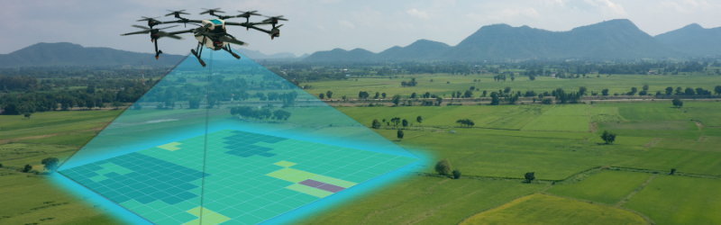

Crop Spraying
Plant protection is essential for maximizing yield and ensuring a high-quality product. With our drone, we provide efficient and precise application of:
- Insecticides, pesticides, fungicides, and fertilizers
- Operate in wet/boggy or hilly areas
- No soil compaction
- Fumigation

Aerial Seeding
Use our drones to plant seeds across large and hard-to-reach areas. Achieve optimal germination, reduced labor costs, and improved yields effortlessly. Ideal for reforestation, cover cropping, and soil health enhancement.
- Even seed distribution for better growth
- Reduced labor and equipment costs
- Seed hard to reach areas

Surveying and Mapping
Boost farm efficiency with our advanced drone technology for detailed topographic maps and regular field monitoring. Optimize crop health and growth with precise data and insights.
- Crop health and growth tracking
- Detailed topographic maps
- Regular field monitoring